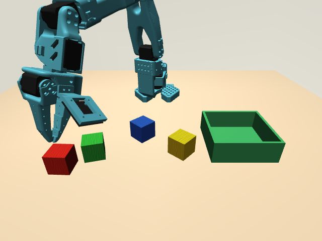
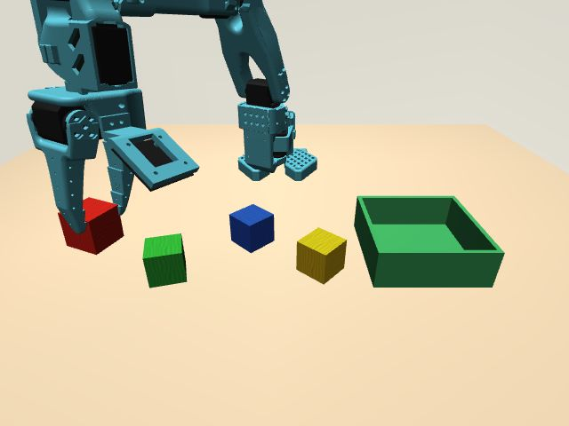

03 / Observe → improve → repeat
Agent experience optimization loop
Fresh Codex sessions used native MCP tools to attempt tasks in simulation. We recorded elapsed time, tool calls, motion attempts, and independent outcome evidence—then improved the interface.
Pickup experience: ~90 seconds → ~68 seconds
Native MCP · simulationThe later session was about 23% shorter and visibly lifted the cube. These are single trials, not a measured success rate or proof of which individual change caused the improvement.
A richer tool interface for the agent
- Prompt + guide
- Clearer tool descriptions and a shared operating guide explain directions, limits and recovery before the agent acts.
- Target evidence
- Annotated bounding boxes and optional calibrated projection onto an assumed plane, in simulation.
- Focused replies
- Motion responses reduced the usual five images to three: physical views plus one side preview.
- Clear outcomes
- Partial motion, refusals, and tracking objectives are distinguished; stale camera frames are rejected.
Recorded native agent trials
Session time excludes server startup| Task / interface | Time | Calls | Motion attempts | Verified result |
|---|---|---|---|---|
| Pickup · pixel-only baseline | 89.3 s | 15 | 11 | Failed grasp Cube remained on table. |
| Pickup · projected target | 68.734 s | 15 | 10 | Visual lift Final image shows cube held above table. |
| Pick, move, place | 92.890 s | 23 | 18 | Corroborated 3.171 cm rise; 4.460 cm horizontal displacement; released on table. |
| Tracking · final recheck | 32.031 s | 5 | — | 75 / 75 detections Five seconds of fixed-front-camera pointing. |
Motion attempts include gripper operations and refused requests, excluding stop. Tracking recheck used 9 image blocks; projected pickup returned 42.
What counts as a real agent trial?
A fresh Codex session discovers the configured MCP server and makes native tool calls. The benchmark launcher starts processes and records events; it does not choose or send robot actions.
An earlier client-script baseline is separate evidence and is excluded from the native comparison above. Likewise, deterministic tracking checks are not native agent benchmarks.
What this does—and does not—prove
The placement result agrees with both final images and simulator telemetry. The optimized pickup has visual verification; automated object verification was not yet enabled for that run.
Fixed-camera red-target pointing is not validation of real wrist-camera face following. Real pickup and face tracking still need their own recorded trials. Historical control checks: 33 passed, 12 skipped.
A repeatable agent experience optimization loop
Run a real agent
Give a fresh agent a task through native MCP tools, not a fixed action script.
Capture the experience
Wall time, tool latency, calls, refusals, images, and source fingerprints.
Check the outcome
Inspect images and independent telemetry, not just the agent’s claim.
Improve the interface
Refine prompts, tool descriptions and feedback, then repeat across scenes and seeds.
The visible outcome


Guide, target geometry and response changes were introduced together. This comparison motivates more optimization loops; it does not isolate one cause or establish an accuracy rate.